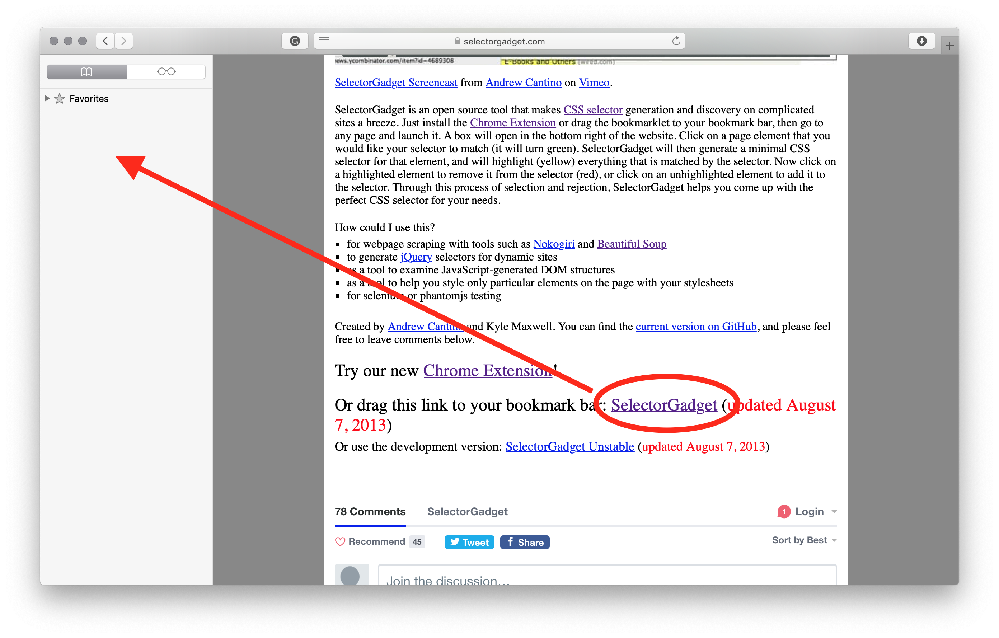
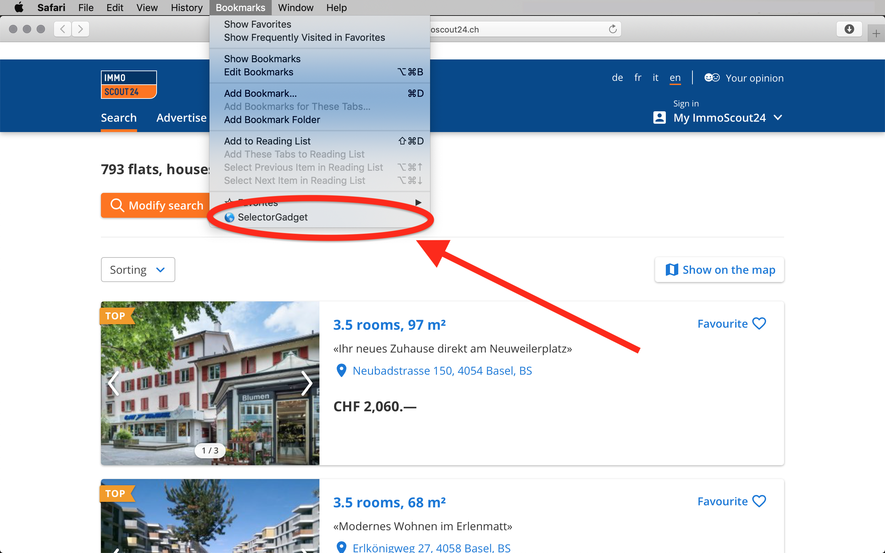
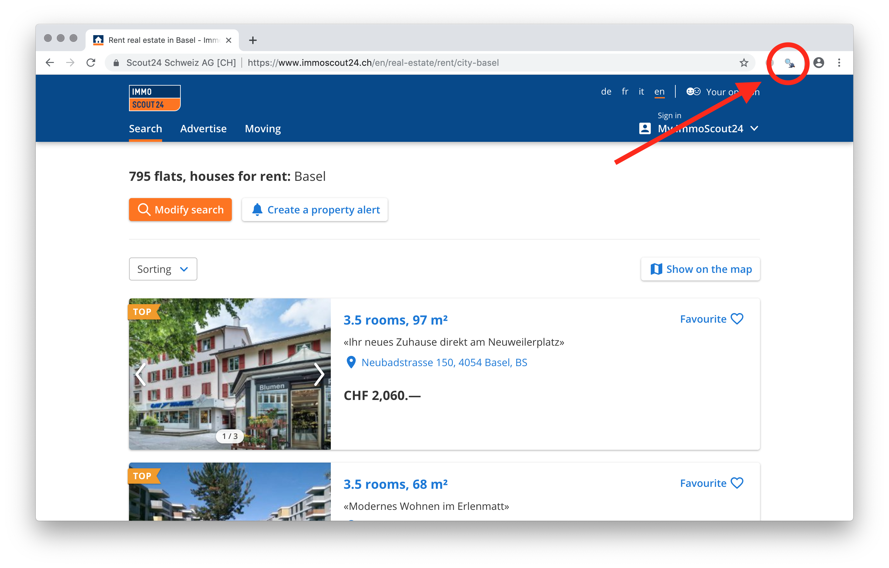
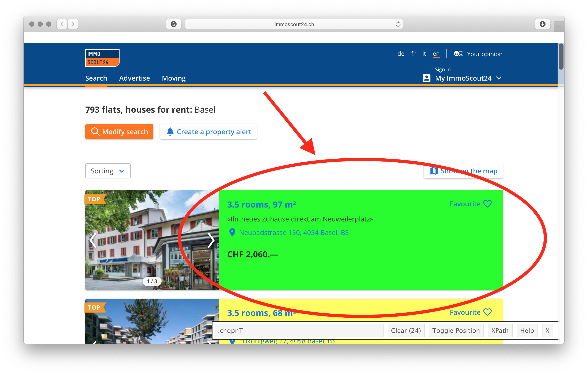
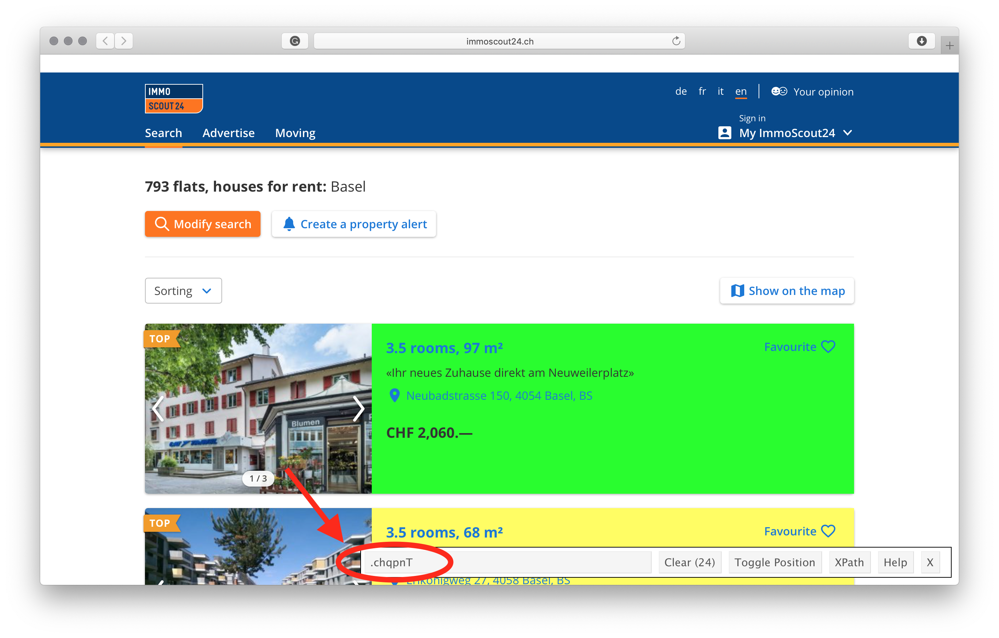

Chapter 10 Web scraping
Imagine: you are invited to your significant one’s parents’ place for dinner. You know that his/her father is a big fan of Swiss wine and you can exploit this fact to make a good impression. You are not an expert of wine though, but you can “show off” with your data science skills and build a story around Chasselas grapes.3 After an intense googling you realize that the desired dataset simply does not exist, and therefore, you have to collect it by yourself. You find a nice app Vivino, which is a great representative of the recent trends in wine. But how to get the data?
Very often (if not always) well-structured data you need for analysis does not exist and you need to collect it somehow by yourself. Nowadays, a vast majority of data are user-generated content, presented in unstructured HTML format. But it is not the worst part – the data are typically dynamic and vary over the time (e.g., the rating of a particular wine or your Facebook friends list). The good thing is that all information is located on the Internet in human-readable format, that is you have an accesses to these data. Therefore, the problem is not in accessing the data, but how to convert this information into the structured (think of tabular or spreadsheet-like) format. In this chapter, we will learn what is the web scraping, how to scrape using R, and when it is legal.
10.1 Web scraping overview
Web scraping is the process of collecting the data from the World Wide Web and transforming it into a structured format. Typically web scraping is referred to an automated procedure, even though formally it includes a manual human scraping. We distinguish several techniques of web scraping:
Human manual copy-and-paste
The name is self-explanatory, that is when humans copy the content of the page and paste it into a well-formatted data structure. This method is very slow but sometimes is unavoidable as the only solution due to legal issues. For instance, one can copy all prices and names from the Vivino list directly into a data frame.
Text pattern matching
This approach is the next step in web scraping. After fetching the page, regular expressions (regex) are used to match the pattern in the text. For example, you can get each character that starts with “Price:” and ends with “CHF”.
Using API/SDK (socket programming)
Web APIs are interfaces, introduced by large websites, to allow getting the content of the web pages (think of databases) directly by posing HTTP requests. For example, Twitter has its API to search tweets, account activities, etc., so that anyone can get these data by sending an HTTP request. Further,
Rhas a package calledtwitteR, that generates those requests for you (i.e., it can be considered as Software Development Kit, SDK for short).HTML parsing
Most of web pages are generated dynamically from databases using similar templates and css selectors. Identifying such css selectors allows mimicking the structure of databases’ tables.
The focus of this chapter is on the HTML parsing, and at the end of it you should be able to scrape data using R. But there is one more thing we should mention before getting to the nitty-gritty details of scraping.
10.2 Denial-of-service (DoS), crawl rate, and robots.txt
Web pages are stored on servers so that if there will be too many requests per unit of time, they can become unavailable (i.e., shut down). When the server is not accessible by intended users, it is called denial-of-service (DoS).4 Often, this property is exploited for DoS attacks, that is when websites are flooded with traffic (buffer overflow attacks) and stop responding. However, it could happen unintentionally (e.g., the introduction of a new exciting website, which was developed to handle only a limited number of users).
Another concept we need to introduce is a web crawling, which has been used extensively by the search engines (such as Google, Bing, etc.) for web indexing. This process is similar to web scraping, but after fetching the content of the web page, crawler extracts only hyperlinks. It means that web crawling also accesses the web page by sending requests. The number of such requests per unit of time is called a crawl rate. Each web crawling requests is the same as a request of a user. Therefore, if your crawler sends too many requests (crawl rate is too high), the server can experience the DoS.
That is exactly what happens to Martijn Koster’s server when Charles Stross’s web crawler caused DoS (if rumors are trusted). This event inspired Martijn Koster to propose a new standard, a file robots.txt that stores a set of rules defining how bots and crawlers should interact with a website, namely which parts should not be accessed, the allowed crawl rate, etc.
The same applies to web scraping: the number of requests should not be too high, and you should access only parts not listed in robots.txt.
10.3 Why web scraping could be bad?
Over the years the reputation of the web scraping has been decreased significantly. There are more and more people who ignore and violate not only robots.txt, but also Terms of Service (ToS) of websites.5 However, that is not the only negative side of web scraping.
Remember the film “The Social Network”? At the beginning of the movie, the main character scrapes pictures of female students and then creates a service to rank students by their attractiveness. This is an example of unethical use of web scraping. The topic is very subjective and controversial, therefore, you are at your own responsibility to define what is ethical and what is not (there is no robots.txt to define ethics).
10.4 How to avoid troubles?
Rules are simple:
Read carefully the Terms of Service of the web page you want to scrape.6
Inspect
robots.txtto identify which parts can be accessed.Do not be too aggressive by using a high frequency of requests. If the crawl rate is not mentioned in
robot.txt(sectioncrawl-delay:), then use something reasonable, e.g. one request per second.7
10.5 Workflow
This workflow is based on two famous works by Wickham (2014b) and Wickham (2019) with a couple of twists.
Make sure that you have no other choice than to scrape. That is, if web resourse has API, then use it instead of scraping.
Make sure that scraping is legal and ethical for a given web page. You can inspect a particular subdomain (path) using
path_allowerfromrobotstxt:8library("robotstxt") paths_allowed( path = "/en/real-estate/rent/city-basel", domain = "https://www.immoscout24.ch/" )or manually go through
robots.txtof the domain (a functionget_robotstxt()):Sometimes
Rcould fail to load this file, and it is a good idea to double check yourself by opening the link torobots.txtat your browser (e.g., manually inspecting https://www.immoscout24.ch/robots.txt).Load (fetch) and parse the HTML file by using function
read_html()fromxml2package:Using selectorgadget define a css element of interest.
Selectorgadget is a tool in your browser (JavaScript bookmarklet) that uses the idea of back engeneering to determine which css object contains the data you want to extract. Selectorgadget is like a kind librarian who tells you in which section to look for a particular book.
First off, we need to install it. Depending on your browser you can install a Google Chrome extenssion or drag the link from https://selectorgadget.com page to Bookmarks (shown in the picture below).

Once it has been installed, it is time to use it:
Open the web page you want to scrap in your browser (e.g., https://www.immoscout24.ch/en/real-estate/rent/city-basel)
Run the selectorgadget. If you use Safari (or similar browsers), click on it in your Bookmarks:

Or click on the icon of the selectorgadget extenssion in Chrome:

- Click on the element you want to select. The element you have selected will be highlighted in green, and all other elements with the same css selector will be higlighted in yellow. If there are redundant elements higlighted in yellow, simply click on them, and they will turn red.

- Copy the css selector from the text box to
R.

Extract data from from the web page by using
html_nodes()andhtml_text()fromrvest:(Optional) Clean and tidy the extracted data. For instance, we use regex to get the number of rooms and the prices in the following code chunk:
As the conclusion, the web scraping is a very powerful tool for extracting data. However, it comes with a certain responsibility.